5040C12 air conditioner housing - r r with facia disconnected
- Path
- Procedures > 50 AUXILIARY UNITS > 5040 AIR CONDITIONING CASING AND COMPONENTS > 5040C air conditioner box and components > 5040C12 air conditioner housing - r r with facia disconnected
- Kind
- repair procedure (removal / refitting; the operation number is the code)
- Applies to
- all engines; all production periods
- Interactive page
- https://sloeber94.github.io/elrnDB-a156/en/#/3238331
Applies to: all engines; all production periods
Applies to: all engines; all production periods; only with equipment: Air Conditioner
 Removing
Removing
 Refitting
RefittingDrain the coolant. 5040A10 Air conditioning refrigerant CIRCUIT - Draining and Refilling
Applies to: engines: 1.6 TS , 2.5 V6, 1.9 JTD 8v , 2.4 JTD 10v; all production periods; only with equipment: Air Conditioner
Applies to: engines: 1.6 TS , 1.8 TS, 2.5 V6, 1.9 JTD 8v , 2.4 JTD 10v; all production periods; only with equipment: Air Conditioner
5010B45 duct from climate control system - r r (left and right sides)
5010B46 central air duct to rear seat - arrange
1. Working from the engine bay, undo the bolt securing the hoses to the air conditioner case.
2. Disconnect hoses (2a) and recover bush (2b).
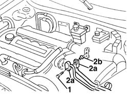
Applies to: all engines; all production periods; only with equipment: Air Conditioner
1. Working inside the cabin, open the clip securing the wiring to the air conditioner.
2. Disconnect electrical connections (2a (2b) to the air conditioner.
 | Name | Connector |
|---|---|---|
2a | Dashboard/air conditioning-heater connection |
| Name | Connector |
|---|---|---|
2b | Dashboard/air conditioning-heater connection |
3. Open the clips securing the air conditioner wiring to the underfacia wiring.
4. Release the air bag wiring from the air conditioner and move.
5. Turn the mixed air temperature sensor and remove.
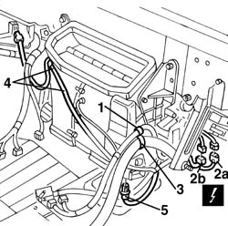
Applies to: all engines; all production periods; only with equipment: Air Conditioner
1. Undo the central bracket retaining bolts.
2. Remove the central bracket.
3. Unscrew the bolts securing the integrated services control unit and relay carrier bracket.
4. Move the bracket.
5. Disconnect integrated services control unit electrical connections (5a, 5b, 5c).
| Name | Connector |
|---|---|---|
5a | Integrated services control unit |
| Name | Connector |
|---|---|---|
5b | Integrated services control unit |
| Name | Connector |
|---|---|---|
5c | Integrated services control unit |
6. Open the clips, release the wiring and recover the bracket with control unit and relays.
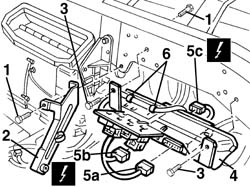
Applies to: all engines; all production periods; only with equipment: Air Conditioner
1. Move the wiring and secure temporarily.
2. Undo the bolts fixing the air conditioning casing.
3. Remove the air conditioner case with wiring.
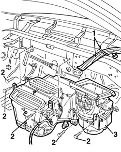
Applies to: all engines; all production periods; only with equipment: Air Conditioner
Refitting
RemovingCheck that the air conditioning casing is not damaged.
Refit the air conditioner casse with wiring.
Tighten the bolts fixing the air conditioning casing.
Release the wiring secured temporarily during removal.
Use clips to secure the wiring to the integrated servic control unit and relay bracket.
Connect the electrical connections to the integrated services control unit.
Refit the bracket.
Tighten the integrated services control unit and relay retaining bolts.
Fit the central bracket and secure with bolts
Fefit the mixed air temperature sensor and turn in its seat.
Secure the air bag wiring to the air conditioner.
Fit the air conditioner wiring clips to the underfacia wiring.
Reconnect both electrical connections to the air conditioner.
Secure the wiring clip to the air conditioner.
Working inside the engine bay, refit the bush, connect the coolant hose fittings and secure using the screw.
 | Fastening | Component | Ø | Value (daNm) |
|---|---|---|---|---|
- | Bolt | Evaporator connectors | M6 | 0.9 - 1.2 |
5010B46 central air duct to rear seat - arrange
5010B45 duct from climate control system - r r (left and right sides)
Applies to: engines: 1.6 TS , 2.5 V6, 1.9 JTD 8v , 2.4 JTD 10v; all production periods; only with equipment: Air Conditioner
Applies to: engines: 1.6 TS , 1.8 TS, 2.5 V6, 1.9 JTD 8v , 2.4 JTD 10v; all production periods; only with equipment: Air Conditioner
5010A16 heater/engine line - r r
5010A12 engine/heater line - r r
Repressurize using coolant. 5040A10 Air conditioning refrigerant CIRCUIT - Draining and Refilling
Applies to: all engines; production: da 03/02 a 09/03, da 10/03; only with equipment: Air Conditioner
Removing
RefittingImportant.
3380A44 handbrake/linkage protection - r+r
7040L22 REAR TRIM on TUNNEL -R.R.
5010B46 central air duct to rear seat - arrange
Working in the engine compartment, free the access to the connectors for the air conditioning coolant pipes. Disconnect the connectors.
Place the vehicle on a lift.
1. Raise the vehicle and loosen the bands (1a) and (1b) for the engine coolant supply and return pipes to the air conditioning casing.
2. Lower the vehicle and, using the two terminals (2a), compress the pipes (2b) and (2c) so that the coolant does not come out when the pipes are disconnected.
3. Disconnect the pipes (2b) and (2c) from the connectors (3a) and let the fluid collect in a container.
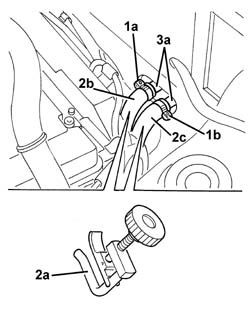
Applies to: all engines; production: da 03/02 a 09/03, da 10/03; only with equipment: Air Conditioner
1. Working inside the vehicle, remove the air ducts to the rear seats.
2. Disconnect the electrical connections (2a, 2b, 2c).
| Name | Connector |
|---|---|---|
2a | Air Bag connection |
| Name | Connector |
|---|---|---|
2b | Air Bag earth |
| Name | Connector |
|---|---|---|
2c | Air bag control unit |
3. Disconnect the electrical connections (3a, 3b).
| Name | Connector |
|---|---|---|
3a | Dashboard/air conditioning-heater connection |
| Name | Connector |
|---|---|---|
3b | Dashboard/air conditioning-heater connection |
4. Release the dashboard wiring (4a) from the retainer (4b).
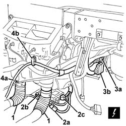
Applies to: all engines; production: da 03/02 a 09/03, da 10/03; only with equipment: Air Conditioner
Disconnect the electrical connection for the accelerator potentiometer.
1. Working on the right side of the dashboard housing, move the carpet (1a) slightly and disconnect the air conditioning casing earth lead (1b).
| Name | Connector |
|---|---|---|
1b | Air conditioning earth |
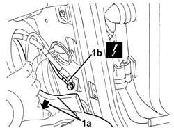
Applies to: all engines; production: da 03/02 a 09/03, da 10/03; only with equipment: Air Conditioner
1. Protect the carpet in case any engine coolant comes out of the air conditioning casing whilst it is being removed.
2. Undo the bolt fixing the air conditioning casing to the bodyshell.
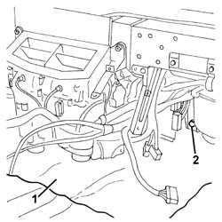
Applies to: all engines; production: da 03/02 a 09/03, da 10/03; only with equipment: Air Conditioner
Remove the dashboard supporting crossmember ( 7040A97 facia trim support beam - r r )
1. Disconnect the bands (1a) and release the wiring (1b) from the air conditioning casing.
2. Remove the air conditioner casing.
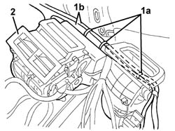
Applies to: all engines; production: da 03/02 a 09/03, da 10/03; only with equipment: Air Conditioner
Refitting
RemovingCheck that the air conditioning casing is not damaged.
Connect the wiring to the air conditioning casing using the bands.
Place the air conditioning casing in position.
1. When positioning the air conditioning casing on the bulkhead, make sure that the condensation drain pipe (1a) is located in the correct housing (1b) in the bulkhead.
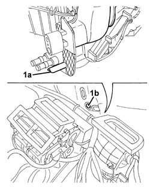
Applies to: all engines; production: da 03/02 a 09/03, da 10/03; only with equipment: Air Conditioner
7040A97 facia trim support beam - r r .
Tighten the bolt fixing the air conditioning casing to the bodyshell.
Working on the right side of the dashboard housing, connect the earth lead for the air conditioning casing, then reposition the carpet.
Connect the electrical connection for the accelerator potentiometer.
Connect the dashboard wiring to the air conditining casing retainer.
Connect the electrical connections for the air conditioning casing.
Connect the electrical connection.
Refit the air ducts to the rear seats.
Working in the engine compartment, connect the engine coolant supply and return pipes to the air conditioning casing.
Tighten the bands.
Remove the terminals from the pipes.
Connect the coolant pipes.
5010B46 central air duct to rear seat - arrange
7040L22 REAR TRIM on TUNNEL -R.R.
3380A44 handbrake/linkage protection - r+r
Refill the engine cooling circuit.
5040A10 Air conditioning refrigerant CIRCUIT - Draining and Refilling
Applies to: all engines; all production periods
Applies to: all engines; all production periods; only with equipment: Right hand drive and Air Conditioner
Removing
RefittingDrain the coolant 5040A10 Air conditioning refrigerant CIRCUIT - Draining and Refilling
Applies to: engines: 2.5 V6; all production periods; only with equipment: Right hand drive and Air Conditioner
Applies to: engines: 1.8 TS, 2.5 V6; all production periods; only with equipment: Right hand drive and Air Conditioner
7040G24 switch for facia compartment light - r+r
7040G20 facia compartment light bulb holder - r+r
5505A18 multi-function control unit - r r
5010B45 duct from climate control system - r r (right and left)
5010B46 central air duct to rear seat - arrange
1. Working from the engine bay, undo the bolt securing the hoses to the air conditioner case.
2. Disconnect hoses (2a) and recover bush (2b).
Applies to: all engines; all production periods; only with equipment: Right hand drive and Air Conditioner
1. Working inside the passenger compartment, disconnect electrical connections (1a), (1b) to the air conditioner.
| Name | Connector |
|---|---|---|
1a | Dashboard/air conditioning-heater connection |
| Name | Connector |
|---|---|---|
1b | Dashboard/air conditioning-heater connection |
2. Open the clips securing the air conditioner wiring to the underfacia wiring.
3. Release the air bag wiring from the air conditioner and move.
4. Turn the mixed air temperature sensor and remove.
5. Undo the fixing bolts and remove the bracket.
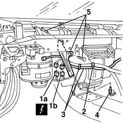
Applies to: all engines; all production periods; only with equipment: Right hand drive and Air Conditioner
1. Move the wiring and secure temporarily.
2. Undo the bolts fixing the air conditioning casing.
3. Remove the air conditioner case with wiring.
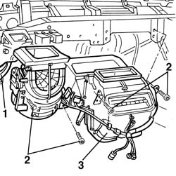
Applies to: all engines; all production periods; only with equipment: Right hand drive and Air Conditioner
Refitting
RemovingCheck that the air conditioning casing is not damaged.
Refit the air conditioner casse with wiring.
Tighten the bolts fixing the air conditioning casing.
Release the wiring secured temporarily during removal.
Fit the central bracket and secure with bolts.
Fefit the mixed air temperature sensor and turn in its seat.
Secure the air bag wiring to the air conditioner.
Fit the air conditioner wiring clips to the underfacia wiring.
Reconnect both electrical connections to the air conditioner.
Working inside the engine bay, refit the bush, connect the coolant hose fittings and secure using the screw.
| Fastening | Component | Ø | Value (daNm) |
|---|---|---|---|---|
- | Bolt | EVAPORATOR CONNECTORS | M6 | 0.9 - 1.2 |
5010B46 central air duct to rear seat - arrange
5010B45 duct from climate control system - r r (right and left).
5505A18 multi-function control unit - r r
Applies to: engines: 2.5 V6; all production periods; only with equipment: Right hand drive and Air Conditioner
Applies to: engines: 1.8 TS, 2.5 V6; all production periods; only with equipment: Right hand drive and Air Conditioner
5010A16 heater/engine line - r r
5010A12 engine/heater line - r r
Repressurize using coolant 5040A10 Air conditioning refrigerant CIRCUIT - Draining and Refilling
Topics linked from this page (27)
- 1056B82 injection/ignition system e.c.u. (one) - r + r
- 3380A44 handbrake/linkage protection - r+r
- 5010A12 engine/heater line - r r
- 5010A16 heater/engine line - r r
- 5010B45 duct from climate control system - r r
- 5010B46 central air duct to rear seat - arrange
- 5040 AIR CONDITIONING CASING AND COMPONENTS
- 5040A air conditioner coolant circuit
- 5040A10 Air conditioning refrigerant CIRCUIT - Draining and Refilling
- 5505A18 multi-function control unit - r r
- 5580C air bag system
- 5580C14 air bag ecu - r+r
- 7040A31 flap assembly - r r
- 7040A97 facia trim support beam - r r
- 7040G20 facia compartment light bulb holder - r+r
- 7040G24 switch for facia compartment light - r+r
- 7040L20 tunnel trim - r r
- 7040L22 REAR TRIM on TUNNEL -R.R.
- C16 Air conditioning earth
- C50 Air Bag earth ( FACIA )
- D21A Dashboard/air conditioning-heater connection ( AIR CONDITIONING )
- D21B Dashboard/air conditioning-heater connection ( AIR CONDITIONING )
- D60 Air Bag connection
- M40A Integrated services control unit ( REAR )
- M40B Integrated services control unit ( REAR )
- M40C Integrated services control unit ( FACIA )
- M60A Air bag control unit ( AIR BAGS )
Topics that link to this page (11)
- 5040B30 expansion valve (tube orifice) - r+r
- 5040C10 air conditioner box - r+r
- 5040C15 air conditioner housing - r r with facia disconnected for versions with passenger airbag
- 5040C50 air conditioner heater radiator - r+r
- 5040D52 air inlet and recirculation flap actuator - r r
- 5040D84 air conditioner left hand air mixer flap control motor - r r
- 5040D86 air conditioner right hand air mixer flap control motor - r r
- 5040D90 air conditioner system wiring bundle - r r
- 5505A26 bonnet wiring - r r
- 5505C30 under-facia wiring - r r
- 5505C31 under-facia wiring - r r